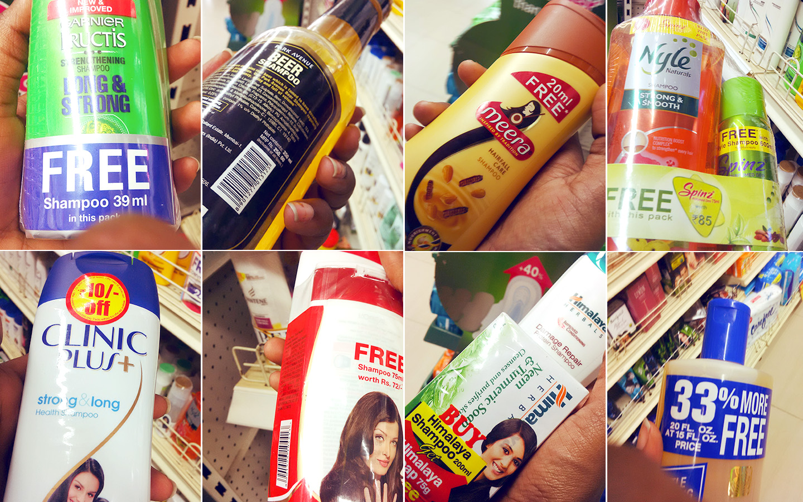
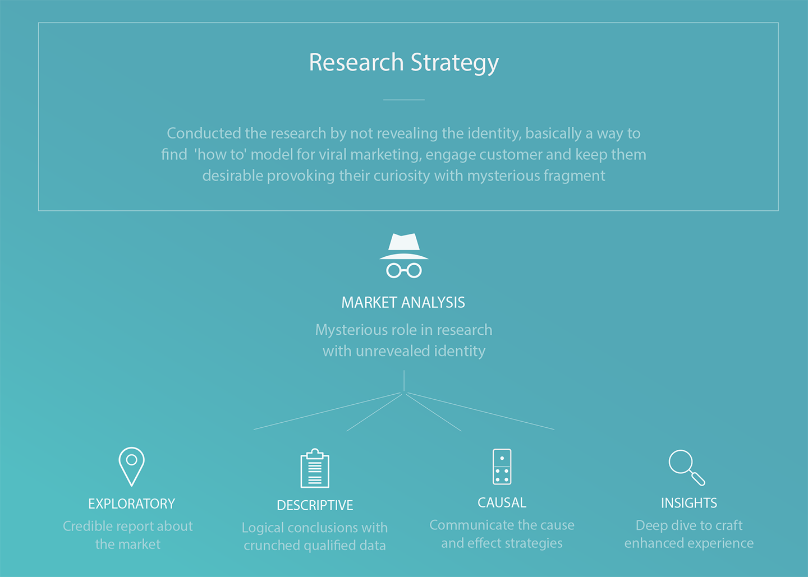

As part of our academy learning, we did a education stunt to gather datas and perform mystery - market analysis in a super market. Having one product in mind precisely, track down all of its competitive products as well target audience to its core. How to market client's product or service and how effectively position product to reach their potential users/ customers amongst an array of identified competitors in a supply chain.
No escape, I was on cameras! Monitored as a customer doing regular grocery shopping on a fine sunday –There were CCTV cameras at the door step as well as inside the shop in every corner. Beyond that the ground work has to be done under cover. Quickly and cautiously attempting multiple times to click as many product images along with their price tag. Identify key metrics to vitalize product distinction based on customer experience.
As a part of the task, i had to strive, research, examine and get a detailed understanding of all the competitive products as well as deep understanding of customer shopping pattern. Capture as many pictures of competitor's product with bar code so it can be fed back as data in a holistic view.
Analysed every interaction a shopper has at the enclosure of a brand based on super market infrastructure.
Competitors always play a significant role in determining the success of every business. It involved efforts to identify who they are? What they charge? What they do well and what they do poorly? Who is their customer and how do they reach them? We wouldn't know what sets us apart from competitor if we don’t know who they are. Getting to know the customers - What they need, What makes them tick. Walkin their shoes and understand their demand right in the market place.
Product arrangements and infrastructure of supermarket was also significant to capture strategic nuances of supply chain business, capturing the product bar codes to track the product details, pricing and discount.
Many times have visited super market, but the very first time to probe mysteriously about products was exciting. Mind was cautious and was keenly looking around the shopkeepers and the security.
It gave the opportunity to understand customer experience and the shopping strategy. It formed a solid base as a training tool to indulge further into market analysis. Customer experience data insights provide a balance of qualitative and quantitative feedback.
Except few hand-picked customers, majority of them went for competitors shampoo with offers. Discount sale, product position in rack, combined offers triggered the customers mind intuitively, influencing their decision to buy products with attractive offers.
Right from the aisle partition to product placement, intensive detailing has been given catering to different age groups need and necessity. Thus making the shopping experience exclusive and quicker for every customers.
Tailored customer access and decision-making process to products in the rack, customer interactions analysed in real time with a host of competitors product. It was vital to determine who the potential competitor is, what he wants to sell and provide it at a price that a customer (he/she) will pay.
Price is a workhorse. It can help solve problems before even a help desk is set up. It can stymie the competition and even do some marketing. It sets expectations for product the moment and it continues to work on behalf (to your benefit or detriment) throughout the entire customer experience.
In our case, except dove almost all the competitors had offers, slashed down discounts apparently. Offers and discount sales attracted more of consumers to pick competitors product, though the arrangement of it were on the same line of the shelves

Consumers are going to do their best to seek the best possible deal while shopping. Boost brand awareness, positioning it in the market space in such a way it draws attention of fleeing customers back to products
The technique of adding a significantly more expensive option amidst same product with offers in order to instantly make the other options look reasonable by comparison was suggested. These kinds of manipulations have been shown to be very effective.
Customer Experience (CX) is an emerging trend in the world of business. To enhance product marketing intact with customer — mystery marketing is the key to unlock Customer Experience. CX can be considered a derivative of customer service, but can still stand on its own as a discipline to be valued — Know what your customer values most and why.
My learning has shown that practicing good CX can be a way to alleviate and prevent shopping cart abandonment the biggest mysteries every online & retail supply chain faces. It is also nearly impossible to succeed without having a good insight about it…
Good UX Isn’t Enough, Good CX Is Important Too
In today’s competitive world, a detailed understanding of Customer Experience (CX) is becoming more and more popular.
